Sixteen business questions, sixteen filters
BD TOPO® 3.5 © IGN, Haute-Garonne.
Each story starts with a question asked in a technical department, a local authority or a consultancy, then translates it into FilterMate settings, step by step. The first twelve stories show QGIS recordings and counted results, in Haute-Garonne and then Estavar. Four illustrated recipes complete all nine combinations of layer types, with settings and expected results.
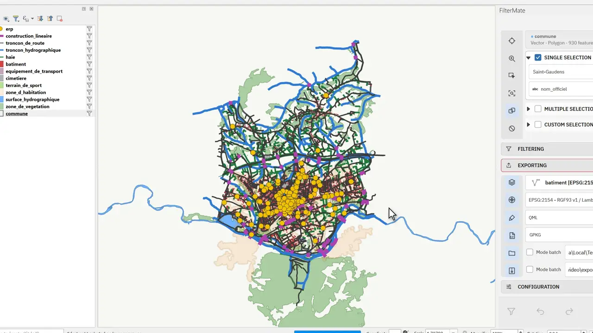
01The commune dossier in three minutes
Scope 12 department-wide layers to one commune and deliver a styled GeoPackage.
12 layers · 12,380 buildings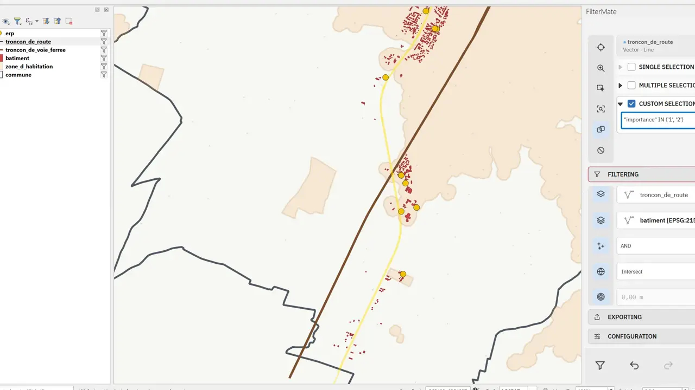
02Which buildings are near the main roads?
A buffer computed by expression from each road category.
2,753 buildings · 78 public buildings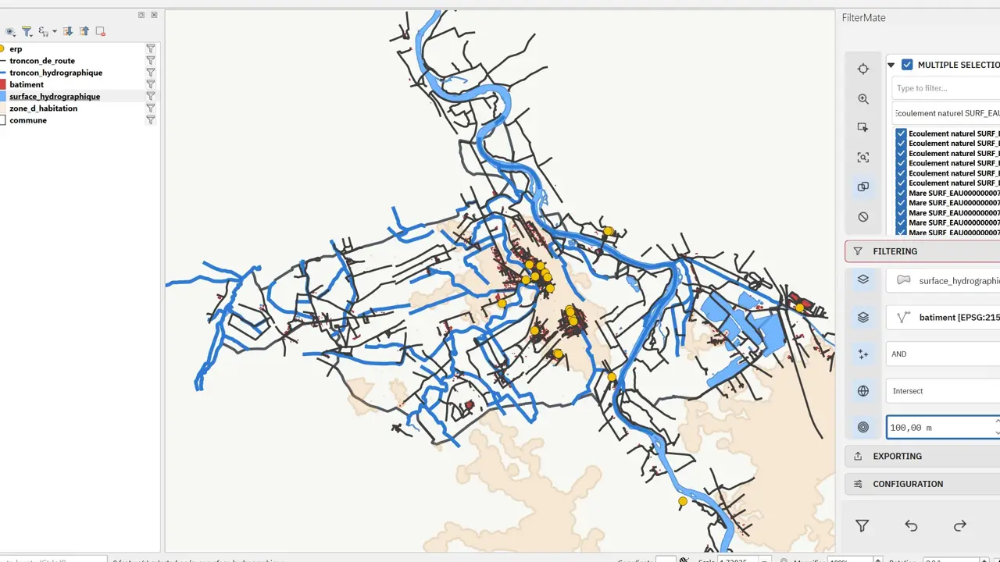
03Buildings near watercourses
A 300 m then 100 m band, with undo and replay.
300 m · 14,426 buildings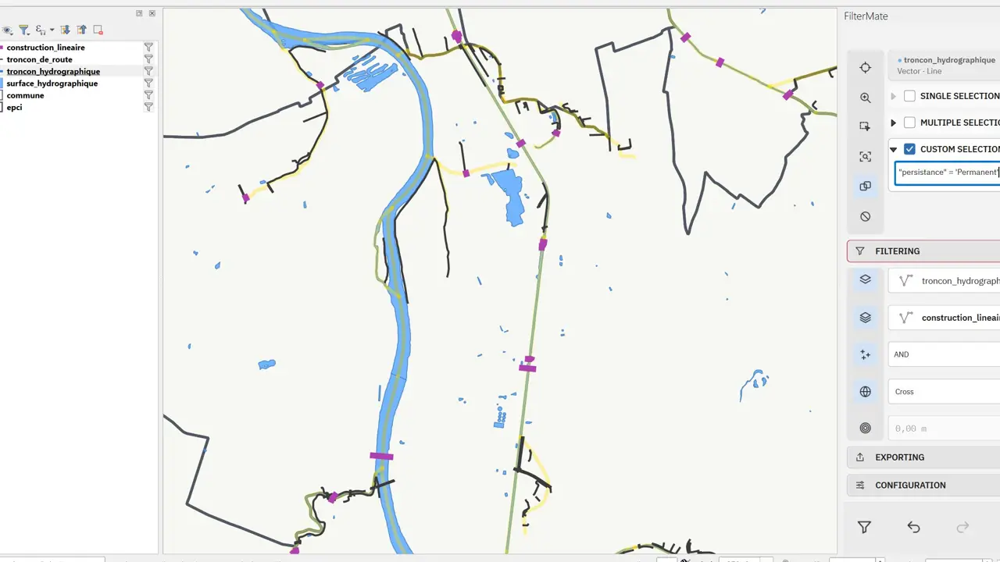
04Find crossings to inspect
Scope a 37-commune EPCI, then apply the Cross predicate.
747 roads · 364 structures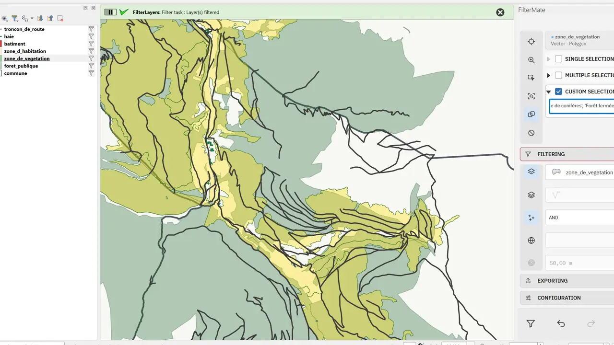
05Clearing brush around homes
Expression selection, 50 m buffer, then an attribute filter.
58 woods and forests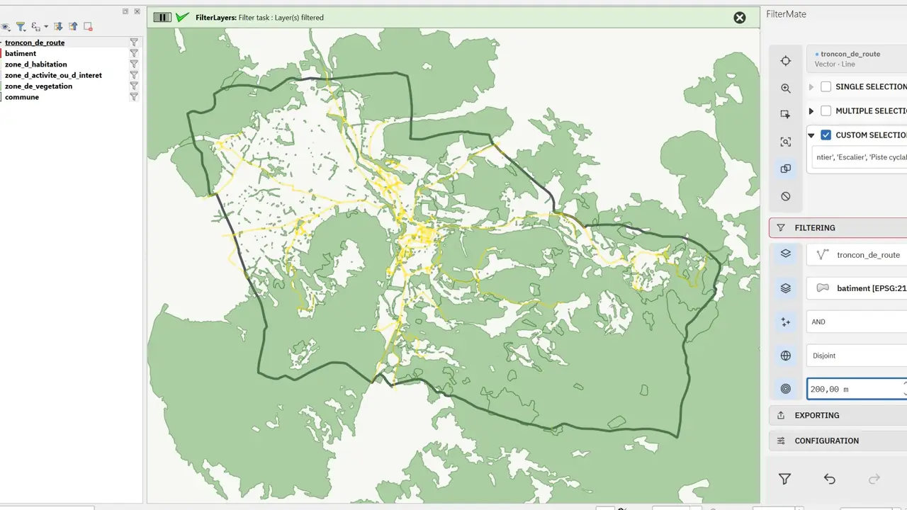
06Hamlets far from paved roads
Disjoint finds what lies outside a 200 m buffer.
22 hamlets beyond 200 m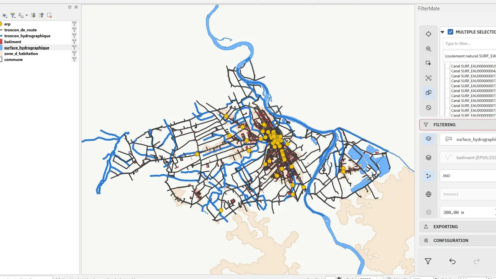
07The query library
Save, describe, replay and share a complete filter.
Same result · one click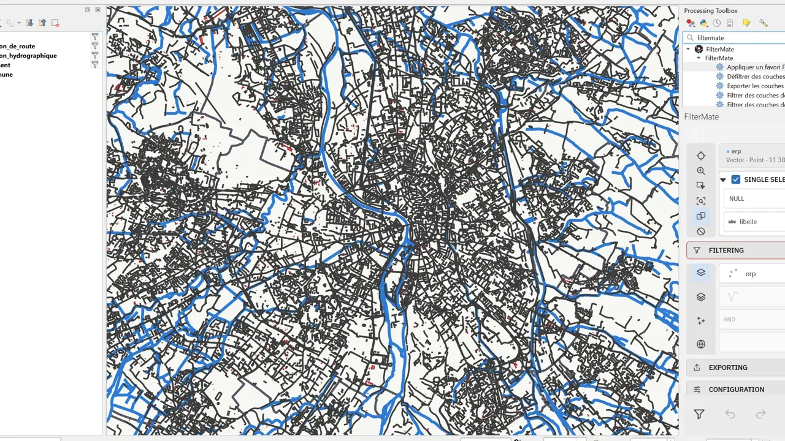
08Objects modified since a date
Apply one date expression to four layers from Processing.
4 layers · 1.6 million objects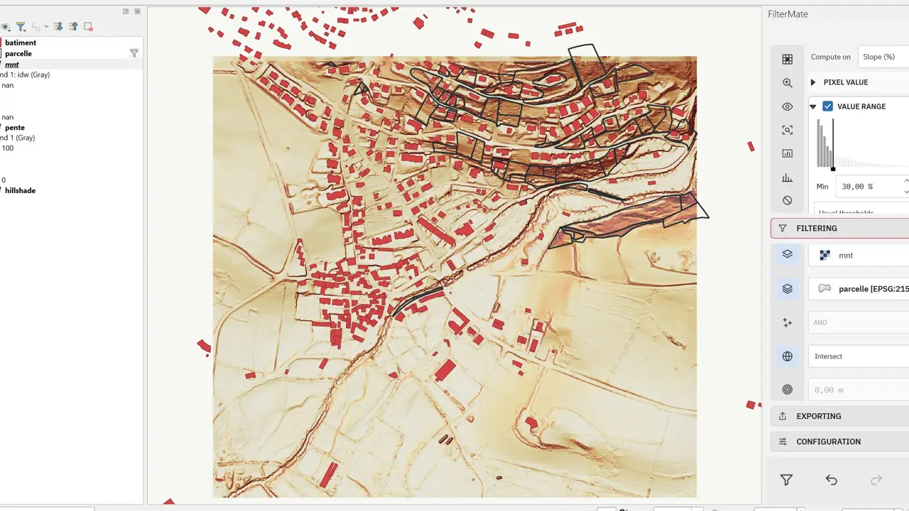
09Parcels on steep slopes
The slope computed from the DTM, a range on the histogram, a minimum coverage.
58 parcels · slope ≥ 30 %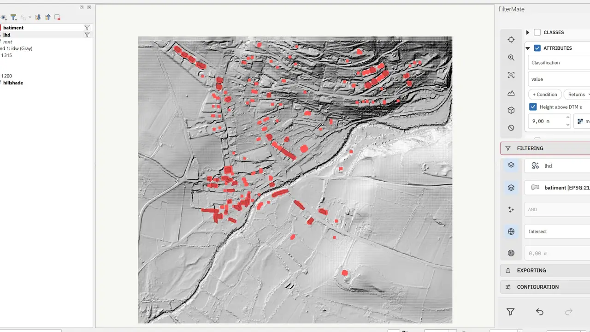
10Building heights
Building class and height above the DTM, computed by PDAL.
57 buildings above 9 m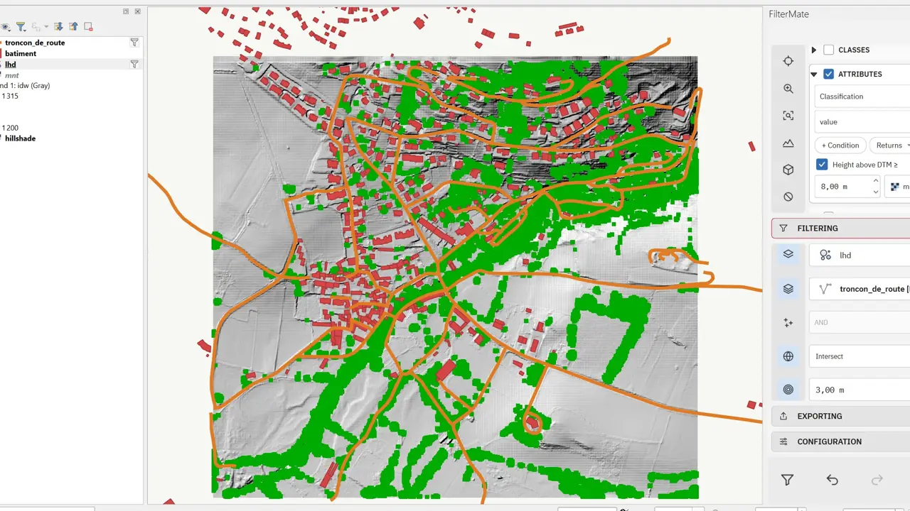
11Roads to prune
High vegetation taller than 8 m, within 3 m of the roads.
91 segments out of 172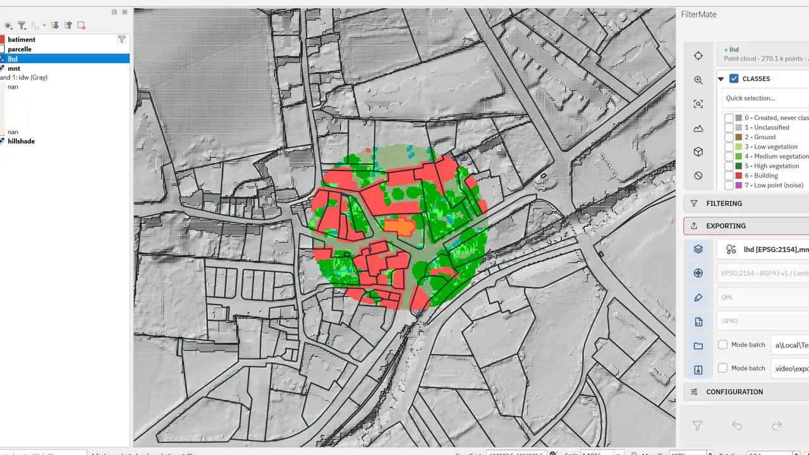
12The survey package around the church
A vector clips a DTM and a cloud, then everything goes into a ZIP.
GeoTIFF + LAZ · ZIP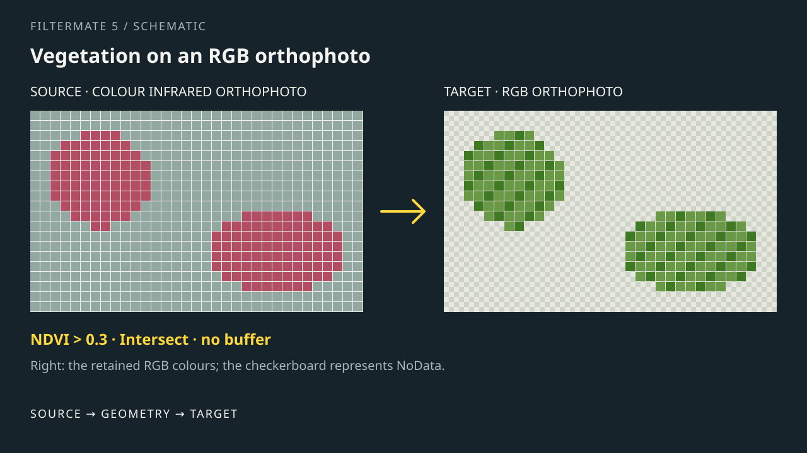
13Vegetation on an RGB orthophoto
The NDVI from an infrared image becomes a mask for another image.
Raster → raster · NDVI > 0.3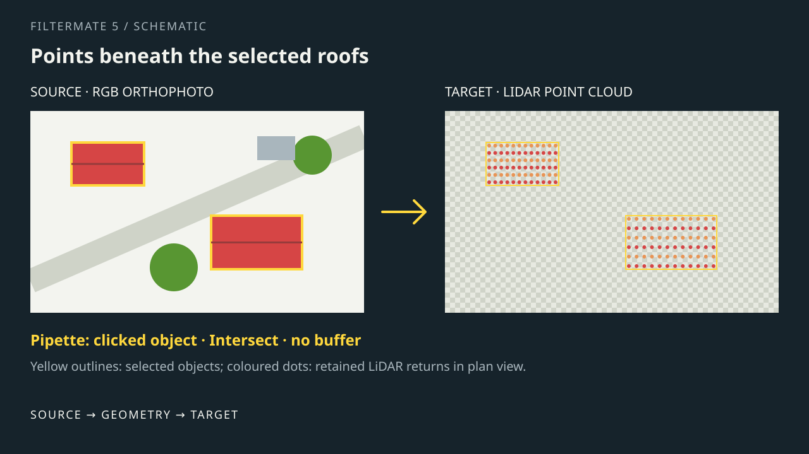
14LiDAR points beneath rooftops
An object picked on the orthophoto isolates the points beneath its footprint.
Raster → LiDAR · object pipette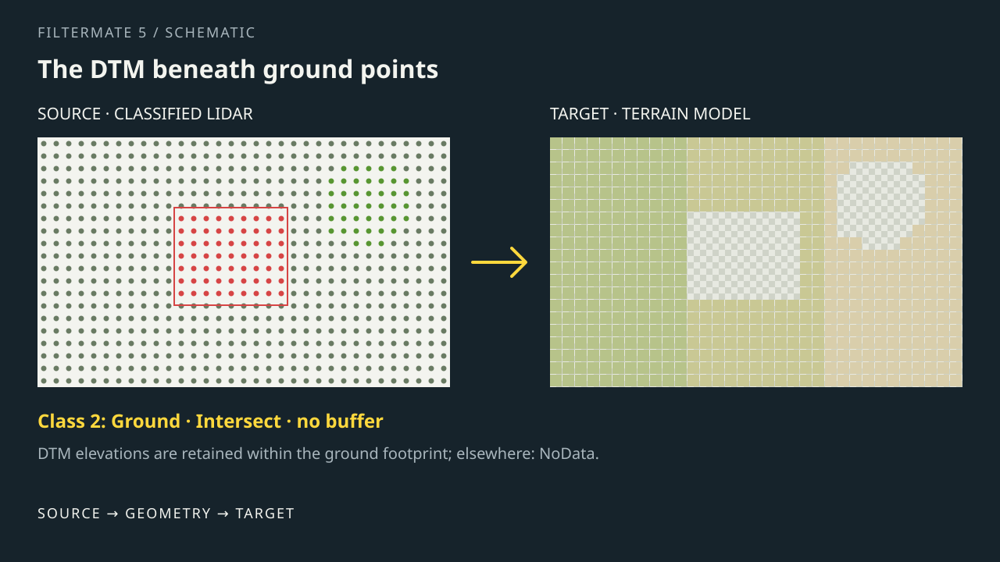
15The DTM beneath ground points
Ground-class points define where to retain the raster elevations.
LiDAR → raster · class 2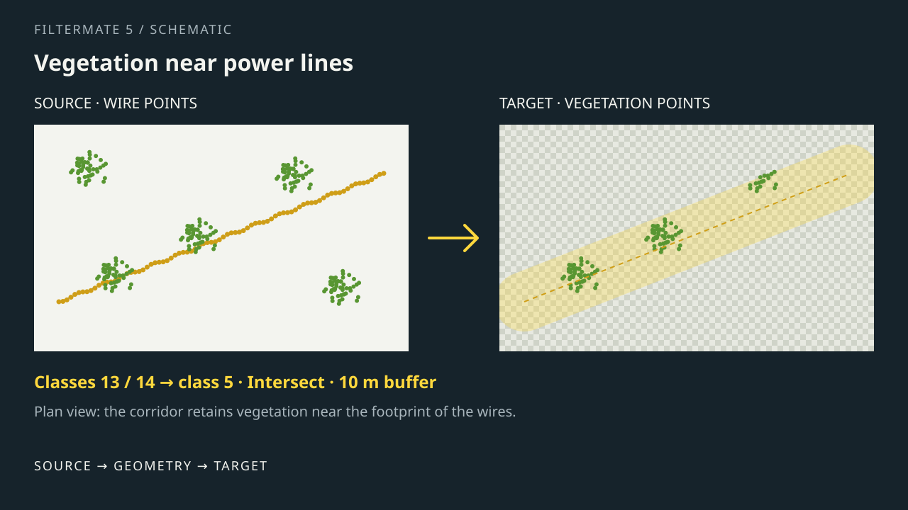
16Vegetation near power lines
Wire points clip a second cloud already filtered to high vegetation.
LiDAR → LiDAR · 10 m buffer0The playground
Stories 1 to 8 use the same file: the BD TOPO 3.5 of Haute-Garonne, exactly as the French mapping agency (IGN) distributes it for free on the Géoplateforme, in a single 2.9 GB GeoPackage with 53 layers. Nothing was clipped beforehand: FilterMate scopes the territory every time.
| Layer | Features in the department | Role in the stories |
|---|---|---|
batiment (buildings) | 1,173,829 | Main target: what is protected, what is served |
troncon_de_route (road segments) | 383,112 | Source of road buffers, target of crossings |
haie · zone_de_vegetation (hedges, vegetation) | 416,105 · 261,051 | Vegetation to clear |
troncon_hydrographique · surface_hydrographique | 49,344 · 9,969 | Watercourses and water surfaces |
erp (public buildings) | 11,384 | Schools, town halls, shops |
construction_lineaire | 12,473 | Bridges, dams, walls |
commune · epci | 930 · 38 | Scoping territories |
filtermate.log. Hardware and cache conditions were not recorded: these observations describe individual runs, not a reproducible benchmark.
1The commune dossier in three minutes
BD TOPO® 3.5 © IGN, Saint-Gaudens.
The need
Camille, a project officer in a consultancy, is answering a tender from the town of Saint-Gaudens. She has the complete department GeoPackage and must deliver tonight only what concerns the commune: buildings, roads, hydrography, vegetation, facilities. With styles, in a file the client opens with a double-click.
The FilterMate translation
The commune is the source layer, picked by name in single selection. Every other layer is ticked at once in Layers to filter, with the Intersect predicate and no buffer. The Exporting tab then writes a GeoPackage with embedded project, QML styles and a ZIP archive.
- Source
commune- Selection
- Saint-Gaudens (single selection)
- Targets
- 12 layers
- Relation
- Intersect, no buffer
- Result
- 12,380 buildings, GPKG + ZIP
- Load the 13 layers and open FilterMate. The Layers panel shows the counts of the whole department: 1,173,829 buildings, 383,112 road segments. Click commune: it becomes the source layer. In the Exploring area, tick Single selection, set the display expression to
"nom_officiel"and type "Saint-Gaudens" in the list. The Tracking button of the Exploring column being on, the canvas recentres on the commune by itself.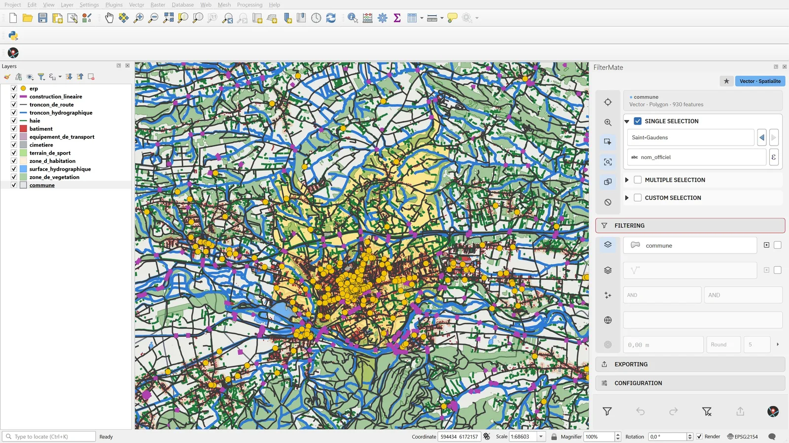
Step 1. The commune is selected (yellow highlight); around it the whole department is still loaded. - Tick every target. Filtering tab, Layers to filter row: right-click in the list, then Select All. The Intersect predicate is ticked, the Buffer row stays off.
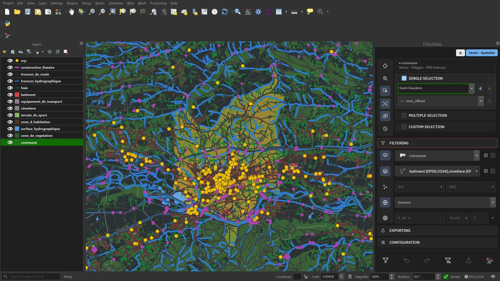
Step 2. Twelve target layers, one predicate, no buffer. - Filter. The log reports under a second for the twelve layers: on GeoPackage, FilterMate first queries the R-tree index of each table, then evaluates
ST_Intersectson the candidates only.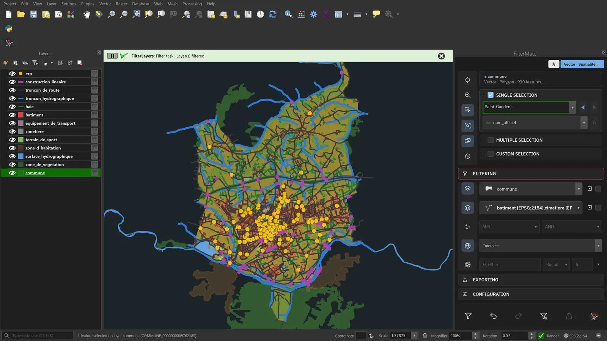
Zoom on the town centre: 12,380 buildings, 317 public buildings, 2,902 road segments. - Configure the export. Exporting tab: the 12 layers, EPSG:2154, styles as QML, GPKG format, output folder and a ZIP archive.
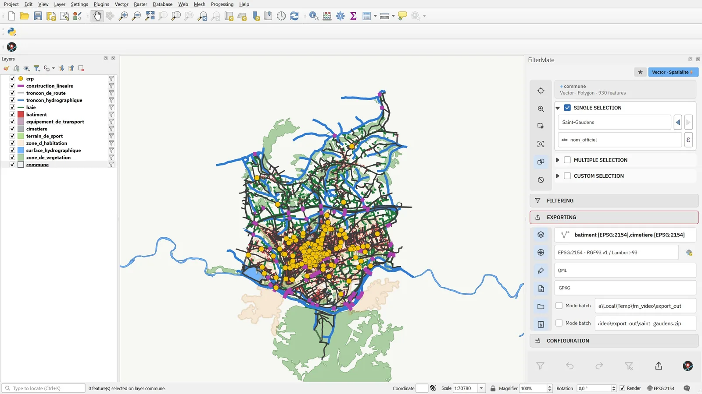
Step 4. Everything is set, nothing is written yet. - Export. Because the format is GeoPackage and several layers are exported, FilterMate shows a recap and offers to keep the group hierarchy. Confirm: the file is written in 4 seconds with an embedded QGIS project.
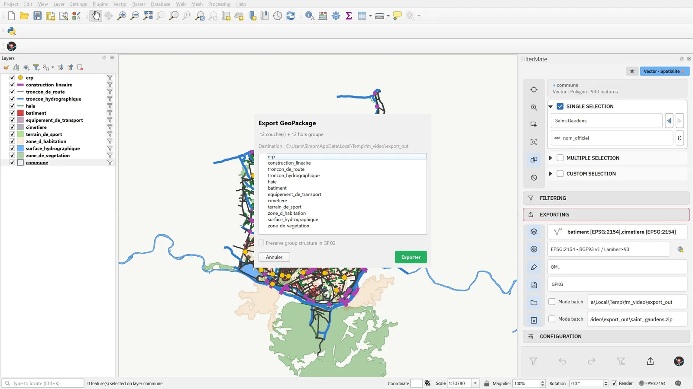
Step 5. Export done; the client will open the .gpkg and find the map as is.
Result
| Layer | Department | Saint-Gaudens |
|---|---|---|
| batiment | 1,173,829 | 12,380 |
| troncon_de_route | 383,112 | 2,902 |
| haie | 416,105 | 1,505 |
| zone_de_vegetation | 261,051 | 1,006 |
| erp | 11,384 | 317 |
| troncon_hydrographique | 49,344 | 157 |
| zone_d_habitation | 31,669 | 109 |
| construction_lineaire | 12,473 | 77 |
| surface_hydrographique | 9,969 | 42 |
| equipement_de_transport | 4,255 | 39 |
| terrain_de_sport | 2,973 | 27 |
| cimetiere | 1,142 | 2 |
Under the hood
Provider filter generated for the buildings layer, as read in Layer Properties → Source:
ROWID IN (SELECT id FROM "rtree_batiment_geometrie"
WHERE minx <= 517706.0 AND maxx >= 511938.3
AND miny <= 6231762.5 AND maxy >= 6222765.8)
AND ST_Intersects("geometrie", ST_MakeValid(ST_GeomFromText('Polygon ((…))', 2154)))2Which buildings are near the main roads?
BD TOPO® 3.5 © IGN, Muret.
importance attribute does not establish a noise classification; the result measures neither noise nor exposed population. For a noise study, use the areas and categories from the official classification.The need
Nadia explores buildings near the main roads of Muret, crossed by the A64 motorway and several departmental roads. Study distances of 300 m and 250 m, chosen by road importance, demonstrate a variable buffer. The result counts buildings and public-access facilities, not residents.
The FilterMate translation
After scoping on Muret, the source layer becomes troncon_de_route with the custom selection "importance" IN ('1', '2'). The buffer is an expression evaluated for each segment: 300 m for importance 1, 250 m for importance 2. The Flat buffer type avoids round ends at segment tips. Targets: batiment and erp.
- Source
troncon_de_route- Selection
"importance" IN ('1', '2')- Targets
batiment,erp- Relation
- Intersect, buffer by expression, Flat
- Result
- 2,753 buildings, 78 public buildings
- Scope Muret. Same gesture as in story 1: commune as source, Muret in single selection, every layer as target, Intersect, Filter. Muret has 19,458 buildings, 354 public buildings and 5,512 road segments.
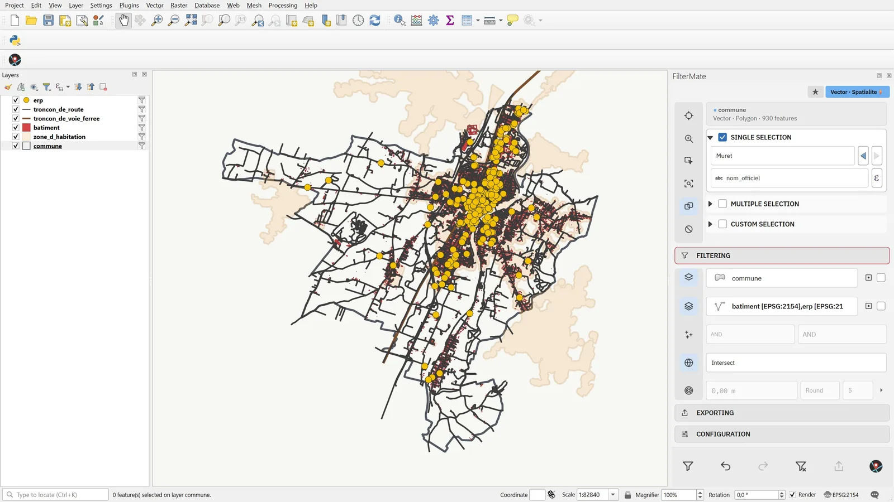
Step 1. The commune is scoped; the A64 crosses it from north-east to south-west. - Pick the main roads. Click troncon_de_route in the Layers panel: it becomes the source. Tick Custom selection and type
"importance" IN ('1', '2'). 102 segments are kept out of the commune's 5,512.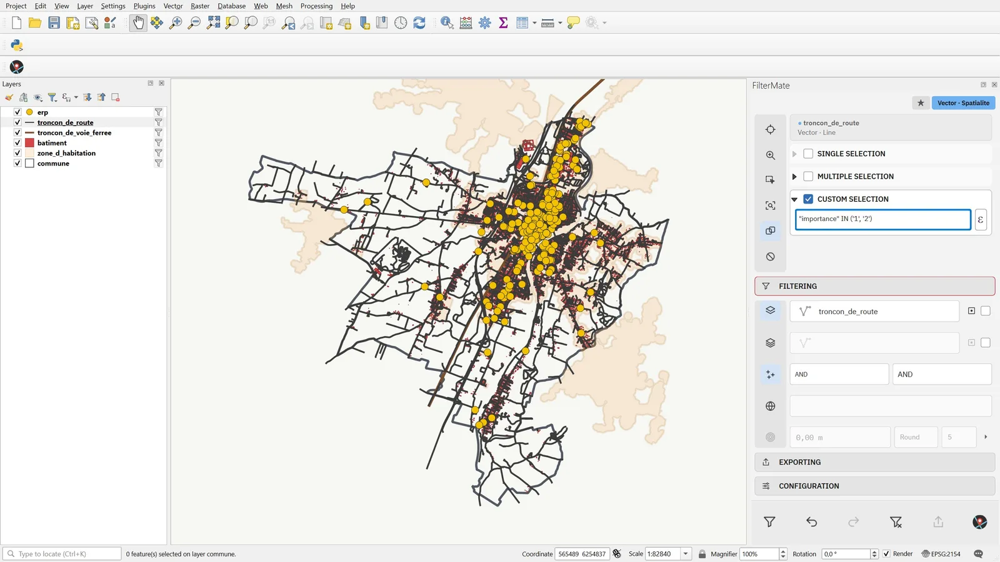
Step 2. The motorway and the main departmental roads are highlighted. - Buffer by expression. Targets batiment and erp, Intersect predicate. On the Buffer value row, open the data-defined property menu, choose Edit…, then enter the following in the expression editor:
Confirm the editor. On the next row, open the Round / Flat / Square list and choose Flat.CASE WHEN "importance" = '1' THEN 300 WHEN "importance" = '2' THEN 250 ELSE 100 END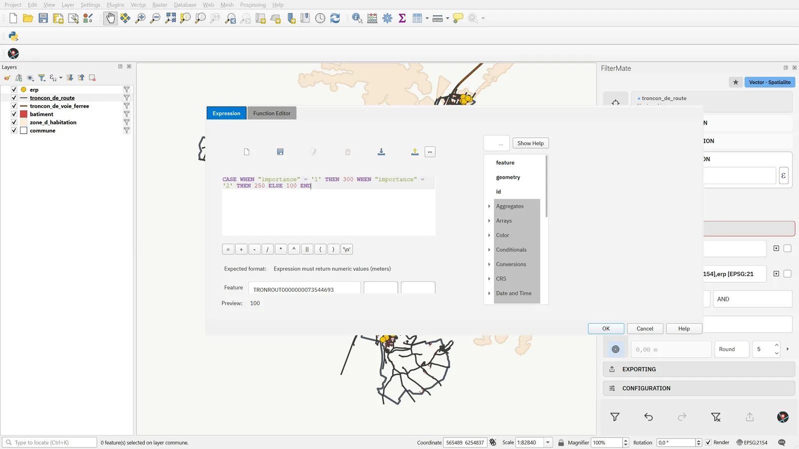
Step 3. One distance per segment, by its importance. 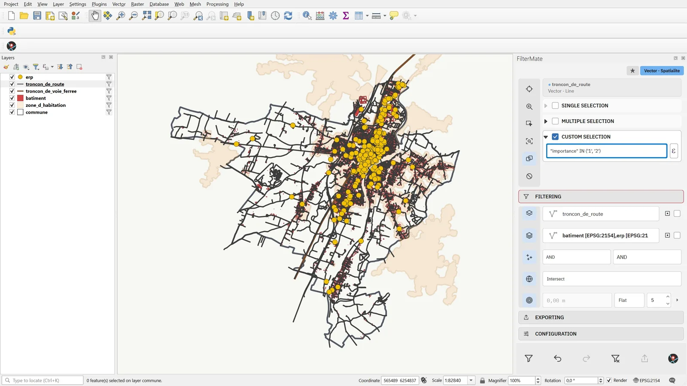
Step 3. The distance is no longer a number but a QGIS expression evaluated segment by segment. - Filter.
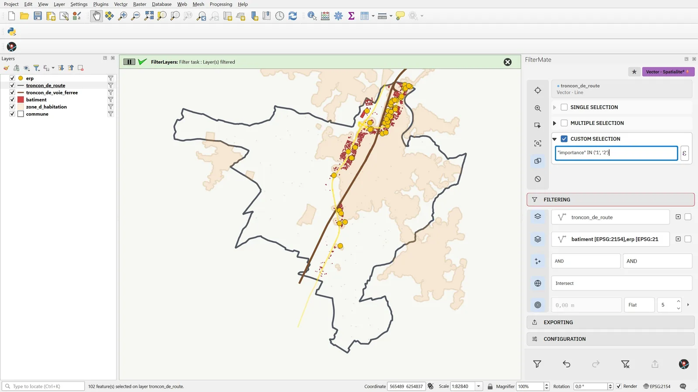
Step 4. Buildings and public buildings outside the sectors have left the map. 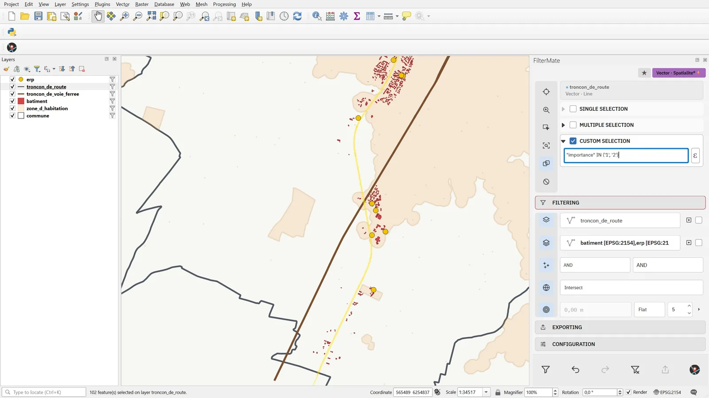
Zoom: the 300 m band around the A64 shows in the distribution of the remaining buildings.
Result
2,753 buildings and 78 public buildings lie in the buffer zones of the 102 segments of importance 1 and 2 of Muret, of which 2,196 buildings and 75 public buildings in the commune itself: the buffer reaches the neighbours, because a new spatial filter replaces the scope (see "One rule to know").
"largeur_de_chaussee" * 3.
Segments with an empty width need a coalesce("largeur_de_chaussee", 3).
3Buildings near watercourses
BD TOPO® 3.5 © IGN, Grenade.
The need
Julien explores the surroundings of watercourses in Grenade, at the confluence of the Garonne and the Save. He compares buildings within 300 m and 100 m of the water surfaces, then restores the first result with Undo.
The FilterMate translation
Source: surface_hydrographique, scoped on Grenade, with a multiple selection and Select All (77 surfaces). Targets: buildings, public buildings and roads, Intersect predicate, 300 m buffer. A second Filter at 100 m, then Undo in the action bar.
- Source
surface_hydrographique- Selection
- 77 surfaces (Select All)
- Targets
- buildings, public buildings, roads
- Relation
- Intersect, 300 then 100 m, Undo
- Result
- 14,426 buildings at 300 m
- Scope Grenade. 6,998 buildings, 79 public buildings, 1,978 road segments and 77 water surfaces.
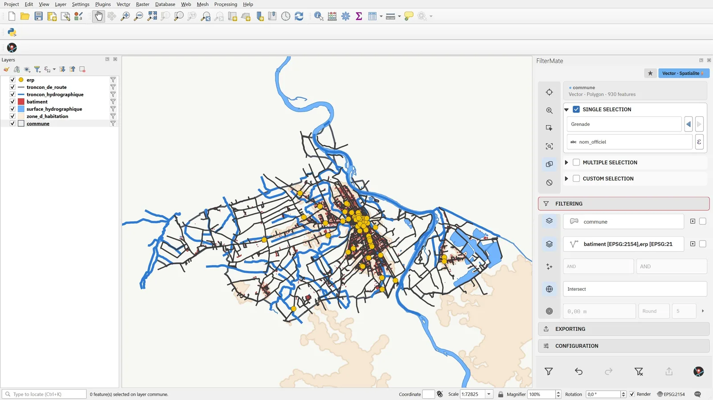
Step 1. The water surfaces (Garonne to the east, Save to the south) are now the only ones on the map. - Select every water surface. Click surface_hydrographique, tick Multiple selection, then right-click in the list and Select All. The summary above the list counts 77 features.
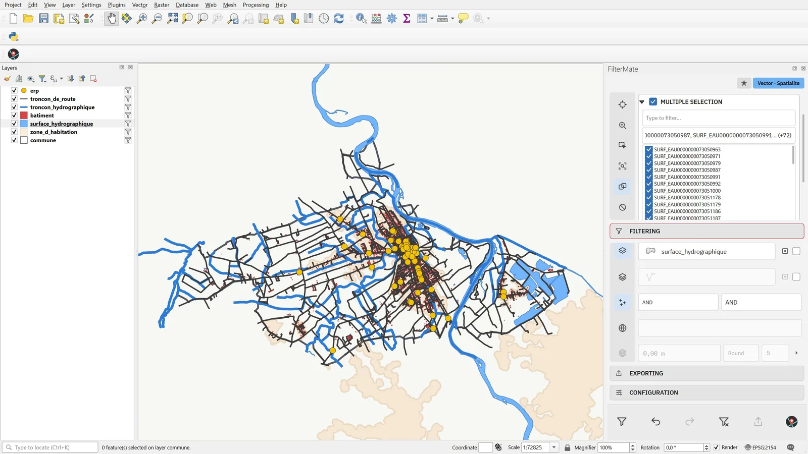
Step 2. The list shows the nature and id of each surface; all are ticked. - 300 m. Targets batiment, erp and troncon_de_route, Intersect, Buffer value 300. Filter.
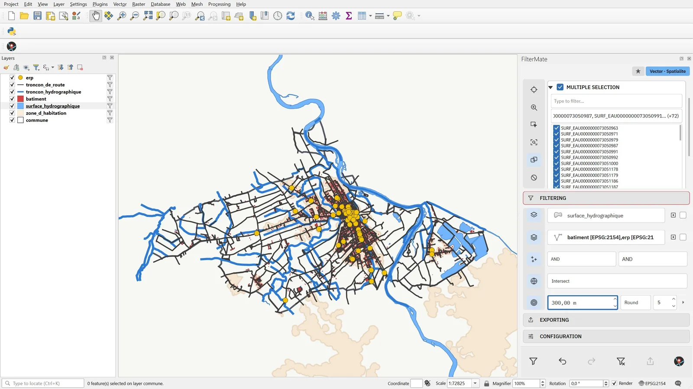
Step 3. Three targets, a 300 m buffer, AND for the targets. 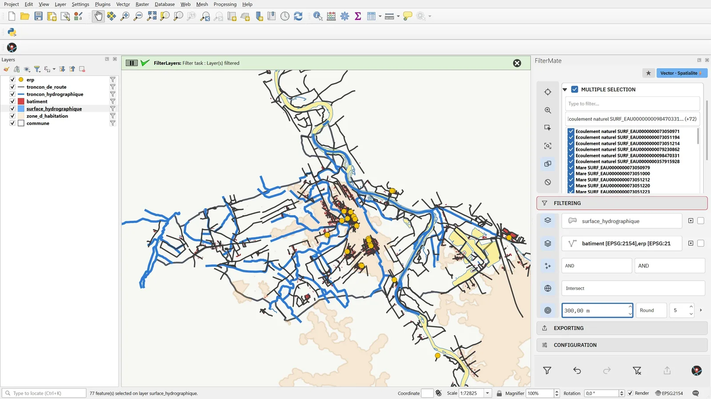
Step 3. The 300 m band follows the Garonne well beyond Grenade: the river polygons are long, and the targets' spatial filter replaces the commune scope. - 100 m. Change the buffer value and press Filter again.
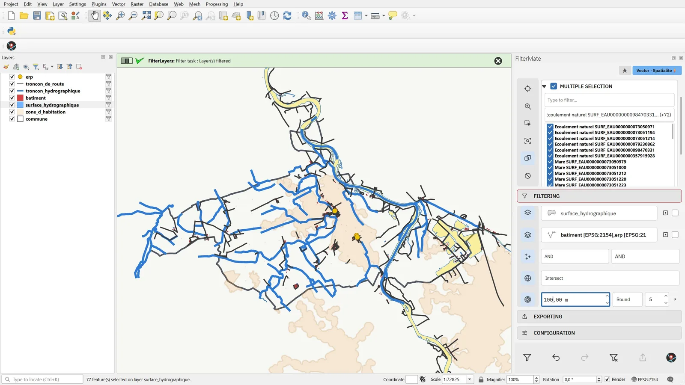
Step 4. The result tightens onto the banks. - Undo. The first button after Filter restores the previous state of the three layers, at 300 m. Redo would reapply it. The history belongs to the project and survives a QGIS restart.
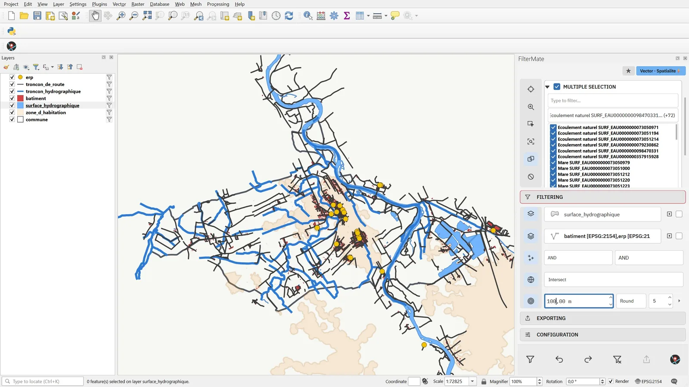
Step 5. Back to 300 m in one click.
Result
| Band | Buildings | Public buildings | Road segments |
|---|---|---|---|
| 300 m around Grenade's water surfaces | 14,426 | 178 | 6,310 |
| 100 m | 2,770 | 28 | 1,949 |
4Find crossings to inspect
BD TOPO® 3.5 © IGN, Toulouse Métropole.
The need
Karim manages the engineering structures of Toulouse Métropole: 37 communes, close to 99,000 road segments. He wants the inventory of the places where roads cross a permanent watercourse, segments and structures, to plan inspections.
The FilterMate translation
Scoping is done this time on the epci layer. Then the source becomes troncon_hydrographique with the custom selection "persistance" = 'Permanent', the targets troncon_de_route and construction_lineaire, and the Cross predicate, without buffer: a road running along the river is not kept, a road crossing it is.
- Source
troncon_hydrographique- Selection
"persistance" = 'Permanent'- Targets
- roads, linear structures
- Relation
- Cross, no buffer
- Result
- 747 road segments, 364 structures
- Scope the EPCI. epci layer as source, "Toulouse Métropole" in single selection on
"nom_officiel", every other layer as target, Intersect. The filter returns 98,687 road segments, 1,844 watercourse segments, 1,181 linear constructions and 70 touched communes.Step 1. The whole metropolis, Garonne, Hers and Touch included. - Keep only permanent watercourses. Source troncon_hydrographique, Custom selection
"persistance" = 'Permanent': 691 segments.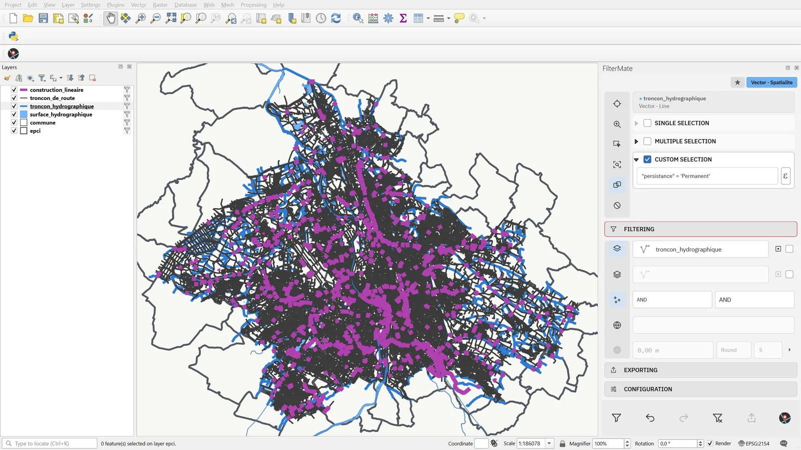
Step 2. Ditches and intermittent flows do not count. - Check the selection on the map. Click Identify in the exploration toolbar: the 691 watercourse segments kept by the custom selection flash red. This visual check confirms the filter source before applying it to the roads.
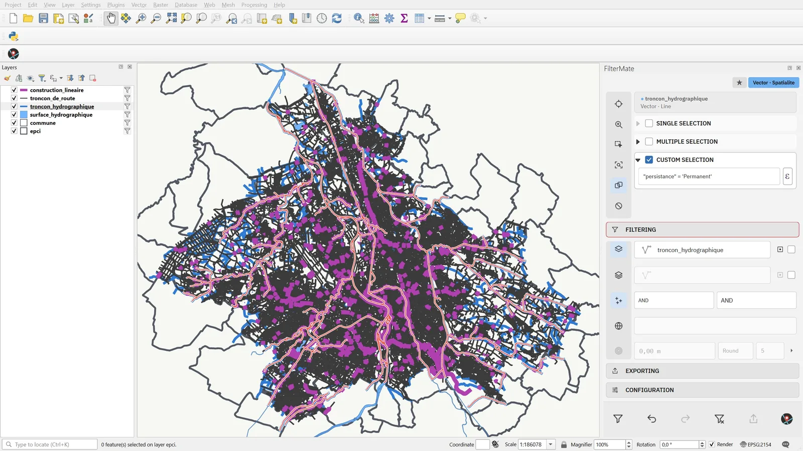
Step 3. Identify flashes the custom selection in red without changing the filter. - Cross. Targets troncon_de_route and construction_lineaire, Cross predicate alone, Buffer row off. Filter.
Step 4. One predicate, no buffer. 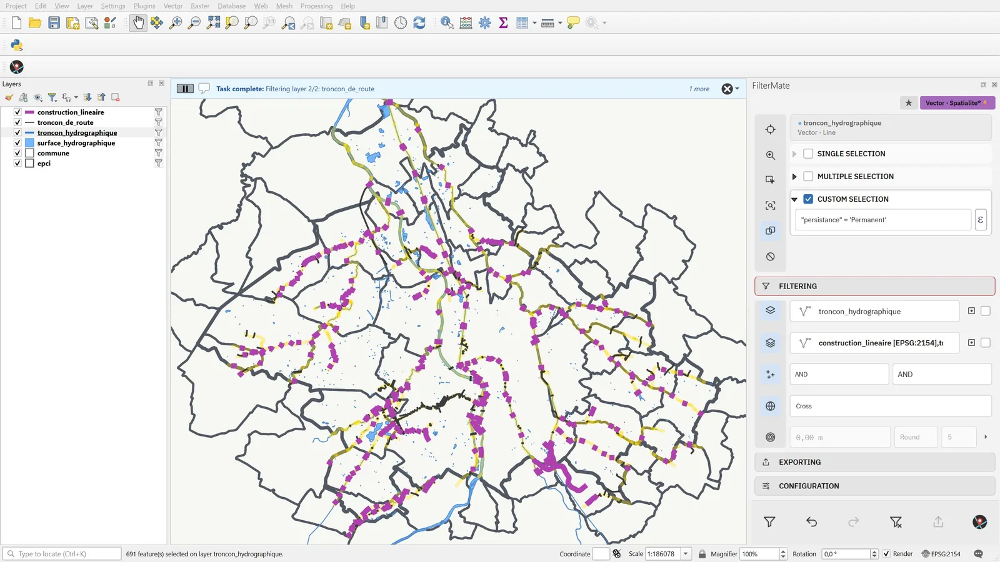
Result at metropolis scale: the crossings draw the river network. 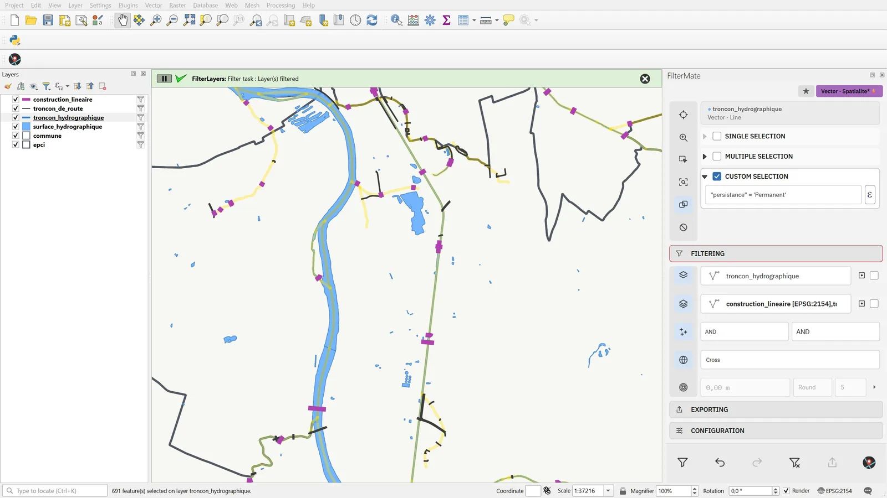
Zoom on the north of Toulouse: every remaining segment is a bridge or a crossing.
Result
747 road segments and 364 linear constructions (mostly bridges) cross one of the 691 permanent watercourse segments of the metropolis. The same computation done outside FilterMate with GEOS gives the same numbers.
5Clearing brush around homes
BD TOPO® 3.5 © IGN, Bagnères-de-Luchon.
The need
Élodie, at the town hall of Bagnères-de-Luchon, maps vegetation near homes using a study distance of 50 m. She distinguishes woods and forests from hedges to prepare a field review. This filter does not determine owners’ brush-clearing obligations.
The FilterMate translation
Source batiment with the custom selection "usage_1" = 'Résidentiel', targets zone_de_vegetation and haie, Intersect, 50 m buffer. Then a second, attribute filter on the vegetation layer turned source, combined with AND with the previous spatial filter.
- Source
batiment- Selection
"usage_1" = 'Résidentiel'- Targets
zone_de_vegetation,haie- Relation
- Intersect, 50 m buffer, then AND
- Result
- 58 woods and forests, 48 hedges
- Scope Luchon. 3,699 buildings, 269 vegetation zones, 123 hedges.
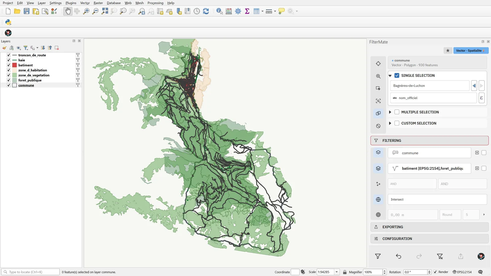
Step 1. The inhabited valley and the wooded slopes. - Keep only dwellings. Source batiment, Custom selection
"usage_1" = 'Résidentiel': 1,619 buildings.Step 2. Outbuildings, farm and industrial buildings are left out of the source. - 50 m. Targets zone_de_vegetation and haie, Intersect, Buffer 50. Filter: 119 vegetation zones and 48 hedges remain.
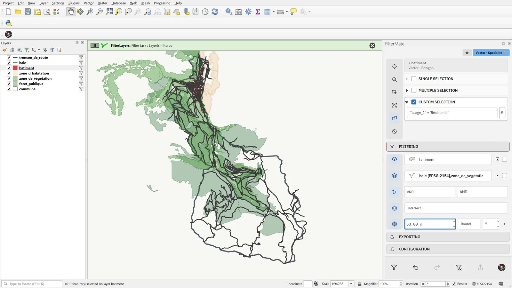
Step 3. Hedges and undifferentiated woods are still there. - Keep only woods and forests. Click zone_de_vegetation in the Layers panel: it becomes the source. Custom selection:
Enable the Combine operator row and leave AND on the left: the new filter narrows the spatial filter already applied to the source layer instead of replacing it."nature" IN ('Bois', 'Forêt fermée de feuillus', 'Forêt fermée de conifères', 'Forêt fermée mixte', 'Forêt ouverte')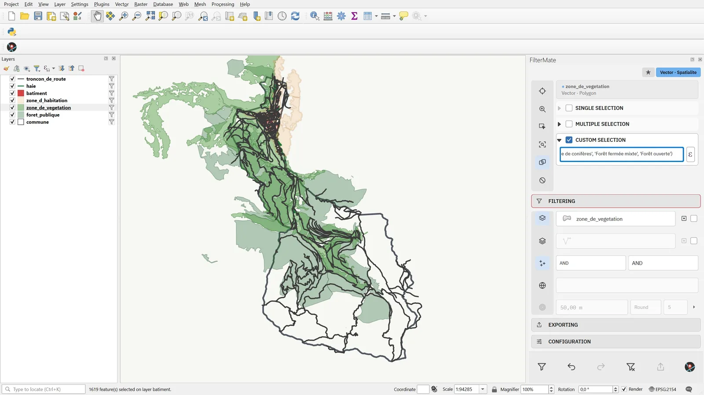
Step 4. The button of the Combine operator row is on, the left operator reads AND. - Filter.
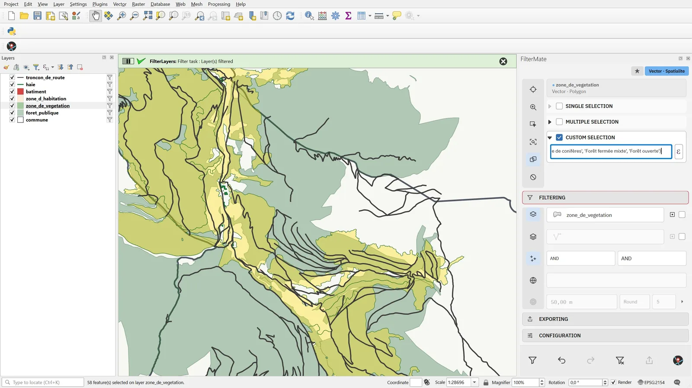
Zoom: the edges to clear surround the hillside neighbourhoods.
Result
Out of the commune's 269 vegetation zones, 119 touch the 50 m band around a dwelling, among which 58 woods and forests; 48 hedges are in the same case.
Under the hood
The vegetation layer's filter after step 5 keeps the spatial clause and adds the attribute clause:
(ROWID IN (SELECT id FROM "rtree_zone_de_vegetation_geometrie" WHERE …)
AND ST_Intersects("geometrie", ST_Buffer(ST_MakeValid(ST_GeomFromText('MultiPolygon (…)', 2154)), 50.0)))
AND ("nature" IN ('Bois', 'Forêt fermée de feuillus', 'Forêt fermée de conifères', 'Forêt fermée mixte', 'Forêt ouverte'))6Hamlets far from paved roads
BD TOPO® 3.5 © IGN, Aspet.
The need
At the fire station of Aspet, in the Pyrenean foothills, the response plan is being prepared: which hamlets and activity zones lie more than 200 m from a paved road, as candidates for a field check?
The FilterMate translation
This is the Disjoint predicate with a 200 m buffer: keep what shares no point with the buffer zone. Since Disjoint keeps everything far away, including the rest of the department, the target layers are first scoped by an attribute filter on the INSEE code, applied with FilterMate's Processing algorithm. The second filter then combines with AND.
- Source
troncon_de_route- Selection
- paved roads
- Targets
- hamlets, activity zones
- Relation
- Disjoint, 200 m buffer, AND
- Result
- 22 hamlets
- Scope Aspet spatially for roads, buildings and vegetation (story 1), then by attribute for the two target layers: Toolbox → FilterMate → Filter multiple layers, layers zone_d_habitation and zone_d_activite_ou_d_interet, expression
"insee_commune" = '31020'. 87 hamlets and 31 activity zones.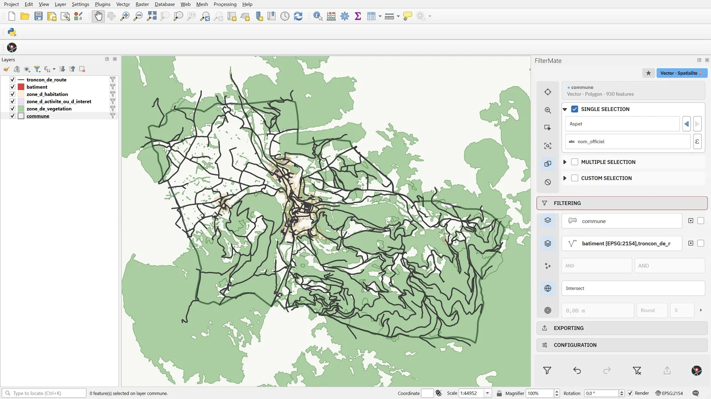
Step 1. The two target layers carry an attribute filter, the others a spatial one. - Keep only paved roads. Source troncon_de_route, Custom selection
"nature" NOT IN ('Chemin', 'Sentier', 'Escalier', 'Piste cyclable', 'Route empierrée'): 494 segments out of 1,168.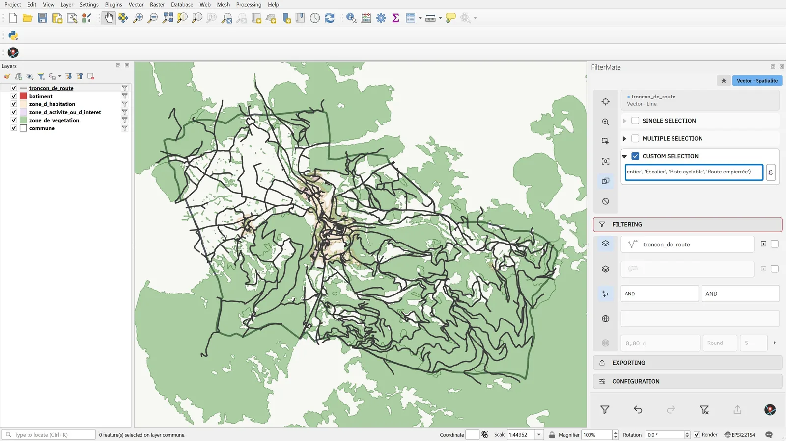
Step 2. Tracks and footpaths, plentiful in the mountains, are left out. - Disjoint, 200 m, AND. Targets zone_d_habitation and zone_d_activite_ou_d_interet, Disjoint predicate alone, Buffer 200, Combine operator row on with AND on the right (the target layers' operator).
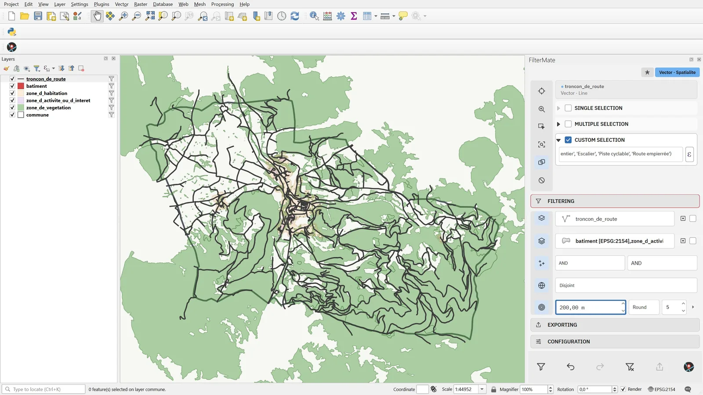
Step 3. Disjoint plus buffer: an exclusion ring. - Filter.
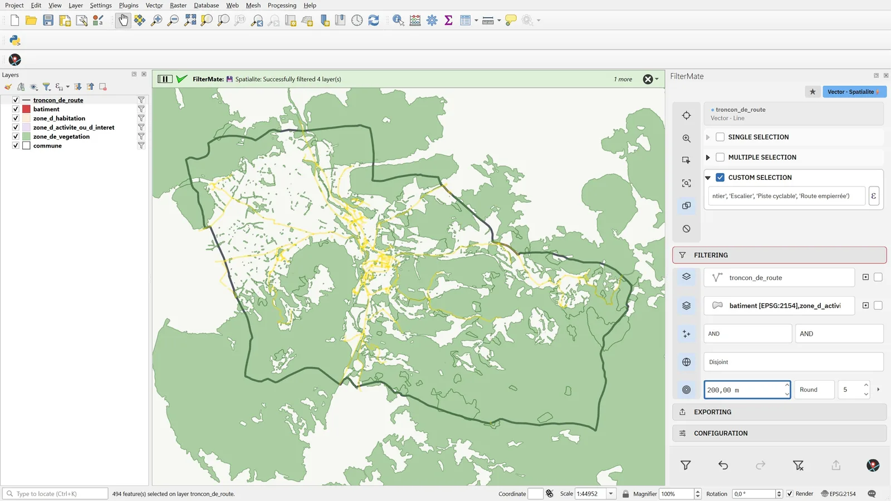
Step 4. The remaining hamlets are those no paved road comes within 200 m of.
Result
22 hamlets of Aspet are more than 200 m from a paved road; none of the 31 activity zones is. At 100 m they would be 32.
7The team's query library
BD TOPO® 3.5 © IGN, Grenade.
The need
Julien (story 3) will redo the 300 m band at every BD TOPO update and wants his colleagues to replay it without him. The filter must exist outside his head: named, described, reapplicable in one click, exportable.
The FilterMate translation
A favorite records the complete filter: source layer, selection, predicates, buffer, target layers. The menu opens from the ★ badge in the header; the manager lets you rename, describe, change the scope (this project or all projects) and export as JSON. With the sharing extension, a shared git repository becomes the team library.
- Source
- favorite
- Selection
- settings of story 3
- Targets
- 3 layers
- Relation
- replayed in one click
- Result
- 14,426 buildings, as in story 3
- Save. The 300 m filter of story 3 is applied. Click the ★ badge then Add filter, name it "PPRI Garonne 300 m".
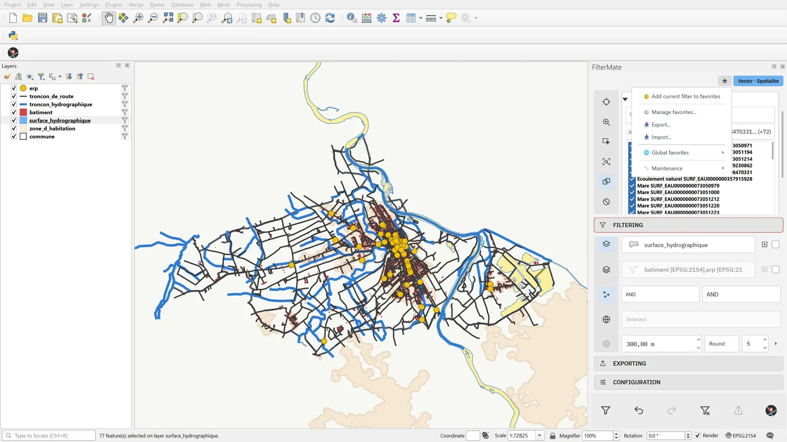
Step 1. The message bar confirms the save; the favorite immediately shows in the Quick filtering section of the ★ menu. - Unfilter. The three layers get the whole department back: 1,173,829 buildings.
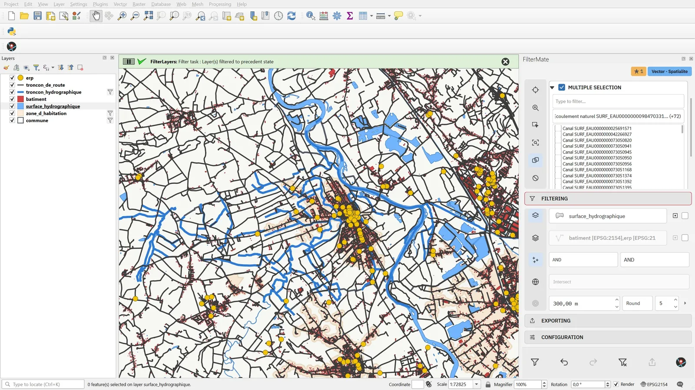
Step 2. Back to the unfiltered state. - Replay. ★ badge then "PPRI Garonne 300 m": the filter reapplies, with the same 14,426 buildings, 178 public buildings and 6,310 segments.
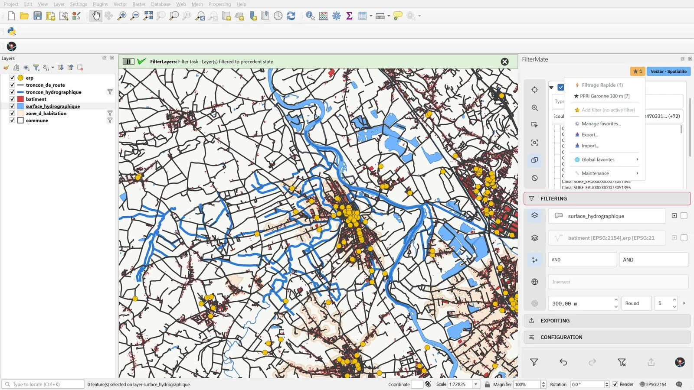
Step 3. Same result, one click. - Describe and share. Manage favorites… opens the manager: description, tags, scope, exact expression, Remote tab to publish to a git repository. Export… writes a JSON file to send to a colleague, who imports it from the same menu.
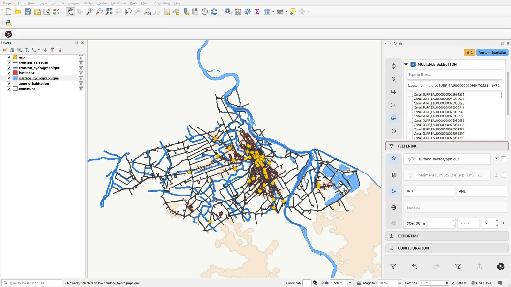
Step 4. The manager: list on the left, details and expression on the right.
8Objects modified since a date
BD TOPO® 3.5 © IGN, Haute-Garonne.
date_modification in the current edition. It does not compare two editions or detect objects deleted between them.The need
Sophie administers the department's GIS and has just received the March 2026 edition of the BD TOPO. Before publishing it, she wants to isolate objects whose modification date is on or after 15 March 2025 on four layers, for a quality check, and be able to redo that check in a Processing model at every edition.
The FilterMate translation
No geometry here: a single attribute filter to apply to several layers. That is the job of the filtermate:batch_filter algorithm of the Processing toolbox, usable in the graphical modeler, in batch mode or from Python.
- Source
- Processing
- Selection
"date_modification" >= '2025-03-15'- Targets
- 4 department layers
- Relation
- attribute expression
- Result
- 22,954 modified buildings
- Open the toolbox and search for "filtermate".
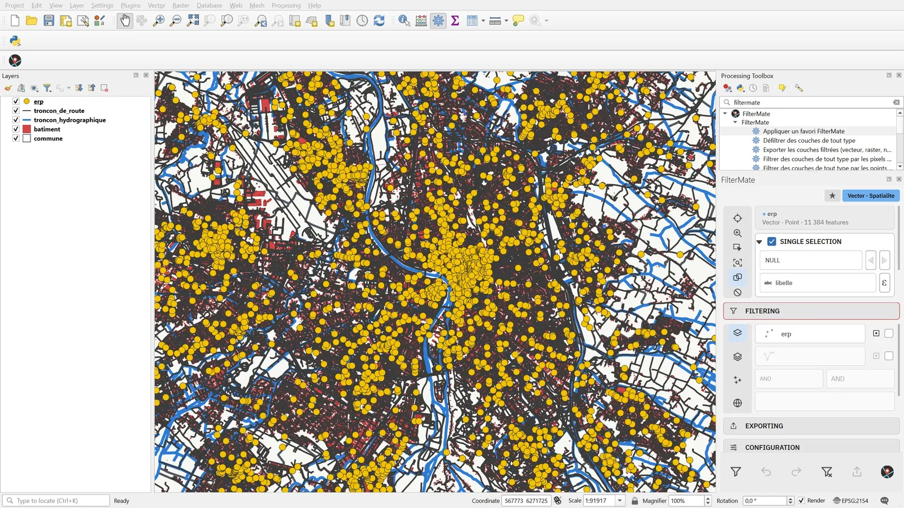
Step 1. The FilterMate provider and its batch filter algorithm. - Choose the layers and the expression. batiment, troncon_de_route, troncon_hydrographique, erp and the expression
"date_modification" >= '2025-03-15'.Step 2. An ordinary Processing dialog: it chains in a model like any other. - Run. The four layers receive the filter in one pass.
Step 3. Around Toulouse, the objects modified in the last year.
Result
| Layer | Department | Modified since 15 March 2025 |
|---|---|---|
| troncon_de_route | 383,112 | 173,616 |
| troncon_hydrographique | 49,344 | 28,519 |
| batiment | 1,173,829 | 22,954 |
| erp | 11,384 | 3 |
The same thing from the Python console
import processing
processing.run("filtermate:batch_filter", {
"INPUT_LAYERS": ["batiment", "troncon_de_route", "troncon_hydrographique", "erp"],
"EXPRESSION": "\"date_modification\" >= '2025-03-15'",
})⁂Second ground: raster and LiDAR in Estavar
Stories 9 to 12 leave Haute-Garonne for one square kilometre of the village of Estavar, in Cerdagne (Pyrénées-Orientales), where FilterMate 5 works on raster and point cloud layers:
| Layer | Content | Source |
|---|---|---|
lhd | 20,422,819 classified points (COPC) | LiDAR HD, tiles 0617_6152 and 0617_6153 |
mnt · pente | 1 m DTM interpolated from the ground points; slope in % for the backdrop | PDAL, gdaldem slope -p |
batiment · troncon_de_route | 668 buildings, 172 road segments | BD TOPO® (IGN WFS service) |
parcelle | 1,763 parcels of the commune | Etalab cadastre |
West of the window, across the border, lies Llívia, the Spanish enclave of Cerdagne: BD TOPO and LiDAR HD cover it, the French cadastre does not. scripts/site_videos.sh data rebuilds these files.
9Parcels on steep slopes
LiDAR HD and BD TOPO® © IGN, Etalab cadastre, Estavar (Pyrénées-Orientales).
The need
At the town hall of Estavar, in Cerdagne, the local plan is being revised: which parcels of the village lie mostly on slopes above 30 %, hard to build on and prone to gullying?
The FilterMate translation
With mnt as the current layer, EXPLORING shows its raster tools. Compute on switches to Slope (%): the slope is computed on the fly from the DTM, without an intermediate raster. The value range 30 % → maximum, read on the slope histogram, becomes the source geometry. FILTERING keeps the parcels covered at least 50 % by it.
- Source
mntDTM, computed slope (%)- Selection
- Slope range ≥ 30 %
- Targets
parcelle- Relation
- Intersect, coverage ≥ 50 %
- Result
- 58 parcels
- Compute the slope. Click mnt in the Layers panel, then Compute on → Slope (%). The histogram now shows the slope.
Step 1. Slope, aspect, hillshade and roughness are computed from the DTM. - Pick the range. Tick Value range and type 30 in Min. The share of kept pixels shows under the histogram: 12.9 %.
Step 2. The tail of the histogram: the steep hillsides. The backdrop shows the same slope, computed by gdaldem. - Relate to the parcels. Target parcelle, Intersect predicate, cov. ≥ 50 % next to the predicates.
Step 3. Without a minimum coverage, a parcel grazed by an embankment would count. - Filter.
Step 4. 58 parcels.
Result
58 parcels of the square kilometre have at least half of their area on slopes above 30 %. The same filter on a precomputed slope raster (gdaldem slope -p) gives the same count.
10Building heights, measured by LiDAR
LiDAR HD and BD TOPO® © IGN, Etalab cadastre, Estavar (Pyrénées-Orientales).
The need
The planning rules cap building heights. The permit office wants the buildings of the village that rise more than 9 m above natural ground, measured rather than declared.
The FilterMate translation
With the point cloud as the current layer, ATTRIBUTES gets a Classification = 6 (building) condition and a height above the DTM ≥ 9 m, computed by PDAL at the first filter. The footprint of the kept points is the source geometry; a 50 % coverage leaves out the terraced neighbours.
- Source
- LiDAR HD point cloud (COPC)
- Selection
Classification = 6and height ≥ 9 m- Targets
batiment- Relation
- Intersect, coverage ≥ 50 %
- Result
- 57 buildings
- The building points. Click lhd, tick ATTRIBUTES, + Condition, then Classification = 6. The eye button isolates them on the map.
Step 1. Classes are conditions too: they combine with the height. - The height. Tick Height above DTM ≥, type 9 and pick the mnt DTM.
Step 2. PDAL computes the height at the first filter, once for the layer. - Relate to the buildings. Target batiment, Intersect, cov. ≥ 50 %.
Step 3. - Filter. The height takes 75 s on 20.4 million points, then the filter is instant.
Step 4. 57 buildings.
Result
57 buildings out of 668 have at least half of their footprint under roof points more than 9 m high. BD TOPO lists 68 at 9 m or more: check the differences on site.
11Roads to prune
LiDAR HD and BD TOPO® © IGN, Etalab cadastre, Estavar (Pyrénées-Orientales).
The need
The local road service plans its pruning campaign: which segments are lined with trees taller than 8 m within 3 m of the road?
The FilterMate translation
Same move as story 10: Classification = 5 (high vegetation) and height ≥ 8 m. This time the targets are lines: troncon_de_route, with a 3 m buffer around the tree footprint.
- Source
- LiDAR HD point cloud
- Selection
Classification = 5and height ≥ 8 m- Targets
troncon_de_route- Relation
- Intersect, 3 m buffer
- Result
- 91 segments out of 172
- The high vegetation. ATTRIBUTES, + Condition, Classification = 5, then the eye to see it.
Step 1. - Taller than 8 m. Height above DTM ≥ 8 on the DTM.
Step 2. Low hedges and bushes drop out. - 3 m from the road. Target troncon_de_route, Intersect, Buffer 3.
Step 3. - Filter.
Step 4. 91 segments.
Result
91 segments out of 172 have trees taller than 8 m within 3 m: the starting list of the campaign, to rank on site.
12The survey package around the church
LiDAR HD and BD TOPO® © IGN, Etalab cadastre, Estavar (Pyrénées-Orientales).
The need
A heritage architect prepares the restoration of the church of Estavar. They ask for the point cloud and the DTM of the church and its surroundings, 50 m around, in a file they can open without QGIS.
The FilterMate translation
Vector source, raster and point cloud targets: batiment with "nature" = 'Eglise', a 50 m buffer, targets mnt and lhd. The DTM is clipped as a VRT, the cloud as a derived COPC; the layers keep their id and style. EXPORTING then writes GeoTIFF and LAZ into a ZIP.
- Source
batiment- Selection
"nature" = 'Eglise'- Targets
mnt(raster),lhd(point cloud)- Relation
- Intersect, 50 m buffer
- Result
- GeoTIFF 45 KB + LAZ 1.0 MB
- The church. Source batiment, Custom selection
"nature" = 'Eglise'.Step 1. - 50 m around, on the DTM and the cloud. Targets mnt and lhd, Intersect, Buffer 50.
Step 2. A raster and a cloud in the same target list as vectors. - Filter.
Step 3. Undo would bring the whole layers back. - Export. EXPORTING: layers mnt and lhd, folder, ZIP path, Export.
Step 4.
Result
A 1.1 MB ZIP: the DTM (GeoTIFF, 45 KB) and the cloud (LAZ, 1.0 MB) of the church and its surroundings.
13Vegetation on an RGB orthophoto
Raster → raster · schematic.
The need
The parks department is preparing a vegetation map. It has a colour infrared orthophoto to identify vegetation and wants to show those areas on the RGB orthophoto, which is easier for colleagues to read.
The FilterMate translation
The ortho_irc image is the source. In EXPLORING, the expression NDVI > 0.3 selects pixels. Their geometry clips the ortho_rvb target with Intersect: the target colours stay inside the mask and the other pixels become NoData.
- Source
ortho_irc- Selection
- NDVI > 0.3
- Target
ortho_rvb- Relation
- Intersect, no buffer
- Expected result
- RGB orthophoto masked in a VRT
- Identify the bands. Choose ortho_irc as the current layer. In EXPLORING, open a colour-role menu and choose IRC if bands 1, 2 and 3 are near infrared, red and green respectively. Adjust the roles if the file uses a different order.
- Select vegetation. Check RASTER EXPRESSION, then choose Insert → Vegetation (NDVI > 0.3). For a colour infrared image with NIR in band 1 and red in band 2, the expression is:
Turn on the preview with the selection button and adjust the threshold by comparing the retained areas with the image.("ortho_irc@1" - "ortho_irc@2") / ("ortho_irc@1" + "ortho_irc@2") > 0.3 - Link to the other image. In FILTERING, check ortho_rvb in Layers to filter, choose Intersect and turn off the buffer. For this first run, start with an unfiltered target and leave combination unchecked.
- Filter, then export. Hide the source to read the target alone. EXPORTING can write the result as GeoTIFF or COG; Undo restores the complete target orthophoto.
Expected result
An RGB layer clipped to the NDVI mask, with its style and identifier preserved. A threshold of 0.3 is a starting point to check against the season, shadows and image characteristics.
14LiDAR points beneath rooftops
Raster → point cloud · schematic.
The need
A consultancy is preparing a survey of several rooftops visible on an orthophoto. It wants to extract the LiDAR points beneath their footprints without tracing each boundary in a vector layer.
The FilterMate translation
The source is the ortho_rvb raster. In Clicked object mode, the pipette follows connected pixels whose colours resemble the clicked pixel. The retained objects become the source geometry; Intersect clips the lhd cloud to this footprint.
- Source
ortho_rvb- Selection
- Pipette, clicked object
- Target
lhd- Relation
- Intersect, no buffer
- Expected result
- Cloud clipped beneath the objects
- Find the rooftop. Choose ortho_rvb as the current layer and zoom to a roof whose colour stands out from its surroundings. Check the red, green and blue roles in EXPLORING.
- Detect the object. In the pipette, choose Clicked object, then click inside the roof. Adjust the tolerance while checking the outline on the map. Ctrl+click adds a sample for another part of the roof or another rooftop.
- Link to the cloud. In FILTERING, check lhd in Layers to filter. Choose Intersect, with no buffer. Start with an unfiltered target cloud to retain every return within the selected footprint.
- Filter and inspect. Hide the orthophoto to examine the points, then show it again to check their footprint. EXPORTING can deliver LAZ or COPC; Undo restores the complete cloud.
Expected result
A derived cloud limited to the footprint of the retained pixels. This is a spatial filter: every return within that footprint may remain, including ground or vegetation points. To keep only building-class points, then apply Classification = 6 to the resulting cloud.
15The DTM beneath ground points
Point cloud → raster · schematic.
The need
A surveyor is preparing a terrain inspection. She has an interpolated DTM and the original classified cloud. She wants to restrict the raster to areas where ground points are present in the survey.
The FilterMate translation
The lhd cloud is the source. In EXPLORING, the Ground preset retains only class 2. The footprint of these points clips the mnt target raster with Intersect and no buffer.
- Source
lhd- Selection
Classification = 2- Target
mnt- Relation
- Intersect, no buffer
- Expected result
- DTM restricted to the ground footprint
- Read the classification. Choose lhd as the current layer. In EXPLORING, open CLASSES and check that class 2 – Ground contains points.
- Retain the ground. In the Selection menu, choose Ground. Check that only class 2 is selected, then use the selection button to preview the points on the map.
- Link to the DTM. Check mnt in Layers to filter, choose Intersect and turn off the buffer. Use an unfiltered target and leave combination unchecked.
- Filter, then read the raster. Hide the cloud to see the clipped DTM. EXPORTING writes the result as GeoTIFF or COG; Undo restores the complete DTM and the previous source state.
Expected result
A DTM VRT whose pixels outside the ground-point footprint are NoData. Existing elevations are preserved: this operation clips the DTM without interpolating it again.
16Vegetation near power lines
Point cloud → point cloud · schematic.
The need
A network operator is preparing visits to wooded areas. Using a survey with classified wire points, she wants to extract high vegetation near the lines to plan inspections.
The FilterMate translation
Two point cloud layers have separate roles: lhd_reseau provides the wire points (classes 13 and 14); lhd_vegetation is first filtered to class 5. A 10 m buffer around the wire footprint then clips that target.
- Source
lhd_reseau- Selection
- Classes 13 and 14
- Target
lhd_vegetation, class 5- Relation
- Intersect, 10 m buffer
- Expected result
- Vegetation within the corridor
- Prepare two layers. Load the cloud twice in QGIS or duplicate its layer. Name them lhd_reseau and lhd_vegetation. Use a metric CRS for the 10 m buffer, such as Lambert-93 in mainland France. Check that classes 13 – Wire – guard or 14 – Wire – conductor, and class 5 – High vegetation, are present.
- Prepare the vegetation target. Leave “apply to other tiles in the dataset” disabled on both layers to keep their selections independent. Choose lhd_vegetation as the current layer. In CLASSES, check only class 5. Uncheck Layers to filter and click Filter to apply the selection to this layer alone.
- Select the wires. Switch to lhd_reseau. In CLASSES, check only the available classes 13 and 14. Use the selection button to inspect the points that will form the source footprint.
- Clip the corridor. In FILTERING, check lhd_vegetation, choose Intersect and set Buffer to 10 m. Click Filter: clipping preserves the class filter already applied to the target. Hide the source to examine the result, then export the target as LAZ or COPC.
Expected result
A high-vegetation layer restricted to a corridor around the wire-point footprint. The distance is measured in plan view, from a footprint on a grid, to identify areas to inspect. The actual three-dimensional clearance between branches and conductors requires further point cloud analysis.
17Replaying these stories at home
The Toutens demo includes four layers, a QGIS project, a favorite and instructions in English and French. Its counts differ from the department-wide examples above.
Download the demo (ZIP, 203 KB)- Download the BD TOPO of your department from the IGN Géoplateforme ("all themes", GeoPackage format, Lambert-93). The file ships with its spatial indexes: that is what makes the cascades fast.
- Load the layers named in each story. The styles embedded in the GeoPackage hide buildings beyond 1:25,000: disable scale-dependent visibility in the layer properties, or apply your own styles.
- Replace the commune names with yours. The fields used (
nom_officiel,importance,persistance,usage_1,nature,insee_commune,date_modification) are those of BD TOPO 3.x, identical in every department. - To reproduce the screenshots for cases 1 to 8, the repository script
scripts/recipe_screenshots.pydrives QGIS from end to end of each story, checks the counts and saves one image per step. Recordings for cases 9 to 12 are prepared byscripts/site_videos.py. - For illustrated recipes 13 to 16, load the layers named in each recipe and follow the settings. The diagrams show expected results; areas and counts will depend on your data.